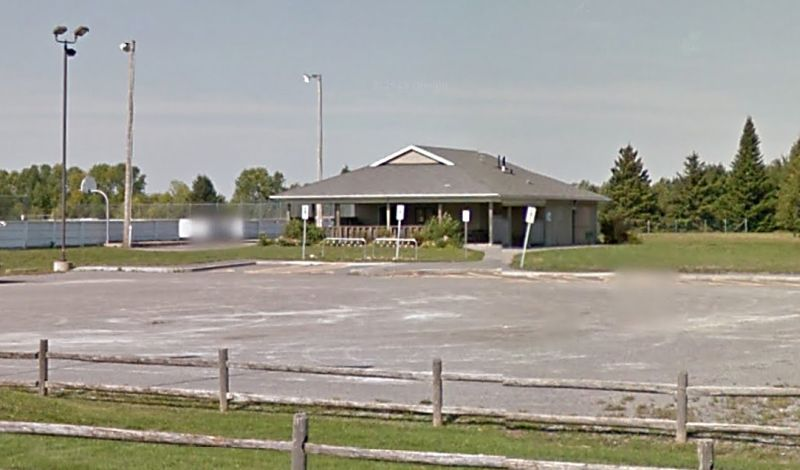

West Carleton Amateur Radio Club
West Carleton Amateur Radio Club
ARRL 2014 June VHF Contest - WCARC
Message from the WCARC President, Clayton Smith(VE3IRR)
Hi all,
As many of you probably already know, the West Carleton Amateur Radio Club will once again be participating in the ARRL June VHF Contest the weekend of June 14-15. But unlike previous years, we'll be operating much closer to home, at the Corkery Community Centre, 3447 Old Almonte Rd. The Community Centre is in grid square FN15xg, just west of Ottawa. It's about a 15 minute drive from Kanata or Stittsville. We hope that the closer location will allow more amateurs to participate.
The contest itself begins at 14:00 local time on Saturday, June 14 and continues until 23:00 local time on Sunday, June 15. But we'll need lots of help on Friday, June 13 to get towers, antennas, feedlines, radios, amplifiers and computer equipment set up, and on Monday, June 16 to take everything back down.
I'm working on scheduling for the event, and would like to hear back from all those planning to participate.
Please reply directly to me argilo at gmail.com with the following information:
- Your email address
- Your phone number (in case I need to contact you about any last minute changes)
- Will you be available on Friday, June 13 to help with setup? If so, at what times?
- Would you be willing to stay at the site part or all of Friday night to watch over the equipment and towers?
- Will you be available on Saturday and/or Sunday to operate? If so, at what times?
- Will you be available on Monday, June 16 to help with takedown?
Thanks and 73,
Clayton Smith (VE3IRR)
President, WCARC
Message from the WCARC Vice President and Contest Co-ordinator, Doug Leach(VE3XK)
The May 6 progress report and planning meeting is important to
participate in decision-making on the best equipment to be used and the
contest organization.
The June 3 training presentation on VHF Contesting
and the N1MM Contest Logging Software is essential for the June contest
operators. This will be an excellent opportunity to sharpen your
operating skills and enjoy the fellowship of Team Radiosport. We will be
running higher power amplifiers on all six bands 6M to 23CM with good
antennas, so we expect to be making an even bigger noise than in
previous years. All we need now is more member participation in this
serious contesting effort.
But WCARC is about much more than VHF Contesting, though we have scored
tops in Canada (and once in the ARRL Central Region) in the June VHF
Contest for the past few years.
May 28th Update from the WCARC Secretary, Glenn MacDonell(VE3XRA)
Hello again,
I've spoken to a few of you as preparations for this year's contest have continued and this general email provides a status report so we are all on
the same page.
After a lot of investigating we've decided on a different location this year - much closer to Ottawa at the Corkery Community Centre 3447 Old Almonte
Road, about 20 km west of Kanata. I've attached a photo of the facility taken from a Google Map Street View.

We will set up 3 towers, in the same sort of arrangement as past years, on the lawns between the parking lot and the building and operate from a large
30' x 15' air conditioned room at the front of the building facing the towers. There are windows along the 30' wall that open at the bottom making it
easy to bring in the cables and the Community Centre provides tables we can use. We'll set them up along the window and have electricity from the grid -
no generators! We'll have indoor washrooms and a kitchen complete with freezer, fridge, stove, microwave and the internet. There are fast food places
a quarter of an hour away and people will be able to bring lunches from home if they want but a full kitchen is tempting. We haven't yet settled on how
much food preparation we'll do - it really depends on who can come and help. We are still finding out who can come and when they would be available. A
very big change will be that most people don't have to commit to a long event and won't need tents or motel rooms as they can return home to sleep in
their own beds! Downtown Ottawa is about 40 minutes away - Smiths Falls is 48 km. We will likely have at least one person staying overnight in the
room for security using cots or air mattresses and there is place for that sort of arrangement.
We will have the facility from Friday through Monday and plan a similar schedule as past years: set-up on Friday with finishing setup if required Saturday
morning, operating Saturday afternoon through Sunday evening and take down Monday. Some setup will be simpler because the power and cooking arrangements
are already in place. However, we won't have the well prepared antennas and jumpers Al brought so I expect some of the putting together of antennas and
towers will take more time. Doug Leach has already checked out the tower locations and marked positions for the towers and stakes and he has assembled
checked the cables . We've been in contact with Al on preparations and he's been a big help advising us on how to replace some of the things he usually
brought like stakes and ropes. As it turned out we have been able to find all the radio equipment and computers we need.
A key next step is the WCARC meeting next Tuesday. Dave (VE3AAQ) will go over contesting best practices and anyone intending to operate during the contest
should try to attend the meeting. We'll also go over some of the last minute details and logistics. As I am sure you all recall there are lots of things
to be done to make the event a success and many ways to help out.
This operation will be a learning experience for us all as we work out what is best for this new location but it promises to be as much fun as it has
been in the past. If you are able to help out that would be great. Please let me know. If you want to talk anything over, give me a call at 613 523-4333.
73
Glenn (VE3XRA)
June 4th Message from the WCARC President, Clayton Smith(VE3IRR)
Hi all,
First off, I want to thank Dave Goodwin (VE3AAQ) once again for his excellent presentation on contest operating last night. I certainly got a lot out of it,
and I have no doubt that the advice he gave will go a long way to improving our station's performance in the June VHF contest the weekend after next.
That said, I want to stress that our club's primary goal in this event is to allow as many of our members (and guests) to participate as possible, and for
them to enjoy their participation. In fact, the reason we moved the location from Grafton back to the Ottawa area this year was to increase participation.
We'll of course also try to achieve the best score we can, but this goal will be secondary. That means that we welcome all operators, regardless of their
previous contesting or N1MM experience. CW experience is also not required. We will have a number of seasoned contest operators on hand who will be able
to help others improve their skills and become familiar with the contest software. As we build up more contesting experience within the club, I have no
doubt that we will continue to improve our scores.
As for the N1MM software package we'll be using, I wanted to make sure nobody was intimidated by it. Dave showed off many of the advanced features last
night, but keep in mind that those are optional. Logging contacts can be as simple as typing in a call sign and grid square, and pressing Enter. As Rich
mentioned last night, there are some great instructional videos available on the web:
http://n1mm.hamdocs.com/tiki-index.php?page=Instructional+Videos
In particular, I highly recommend watching "Operating N1MM Logger on Field Day", near the bottom of that page. Logging for the June VHF contest is even
simpler than in the video, as there's only one exchange field (grid square) to fill in, rather than two. Keep in mind that the CW keyer and voice keyer
features are optional; we'll have them set up for the June contest, but you can use the microphone or CW key manually if you're not comfortable with N1MM's
function keys.
To help get everyone comfortable with N1MM, we have booked the upstairs meeting room at Sobeys (700 Terry Fox Dr) for next Tuesday, June 10, starting at
19:30. Glenn and I will bring in three laptops, which will be running N1MM in networked mode. You can try your hand at logging contacts, and also
experiment with some of the more advanced features such as handing off contacts to another station. I hope to see you Tuesday evening! If you aren't
able to make it out, we will also have an extra laptop on hand at the contest site, which can be used to "warm up" before getting on the air.
Of course, the best way to get familiar with N1MM is to install it on your own computer and try it out on the air. It has a "DX" mode that you can use
even when there's no contest going on.
If you you'd like to participate but haven't already been in touch with me regarding your availability for the contest, please let me know so I can update
my spreadsheet. Also, please reply to me if you'd prefer not to receive further emails about the VE3WCC contest effort.
Thanks and 73,
Clayton Smith (VE3IRR)
President, WCARC
June 5th Official Announcement on Contest from the WCARC Secretary, Glenn MacDonell(VE3XRA)
The West Carleton Amateur Radio Club of Ottawa will again operate VE3WCC for the June ARRL VHF QSO Party, this year from a new location in FN15xg.
After six years of operating a multi-op station from a great site in FN04xa we will work from closer to home to make it easier for our members
to participate and grow VHF contesting in our area. The site is about 30km north of the intersection of FN15, FN25,FN14 and FN24. We registered
the highest score in Canada the last two June contests and will be working to get the best performance we can from the new site.
Each of the past six years we have added capability or power. This year we will add 3.4 GHz and 5.8GHz using relatively low power SDR equipment,
as well as 10 GHz and 24 GHz stations to our standard coverage of the bands from 50 MHz through 2304 MHz augmented by shorter range wideband
microwave equipment. We will run 1kw at 2m and 500w at 6 m this year to single long boom yagis with higher power than past years (250 - 300w)
on 222MHz and 1296 MHz.
We will again have the capability to operate WSJT at 2 and 6m and are interested in setting up skeds for the quiet hours of Sunday morning.
Rovers who will be within range are asked to forward their rover schedules to VE3XRA. Please include the grids squares and approximate times you
plan to be in each, a list of bands you are able to operate, and the co-ordination frequency you will use.
We will set up on the site at the Corkery Community Centre 3447 Old Almonte Rd. Ottawa ON, lat 45.259316 N long -76.060858 W, on Friday June 13
and pack up Monday June 16. Visitors are welcome to drop by. Rovers passing nearby are invited to stop by for a snack and hot coffee.
Schedules are very welcome - please send requests to ve3xra@rac.ca. We will have access to internet at the site and can arrange skeds up to
the start of the contest.
Posted by: Glenn MacDonell
*** Please Be Patient - These are slow loading! ***
The Contest Presentation from May 6th can be found here.
VHF Contest Tactics Presentation from June 3rd can be found here.
 Back to WCARC Home Page
Back to WCARC Home Page
This page was updated on June 6, 2014 and is Copyright ©
2004-2014 by West Carleton Amateur Radio Club